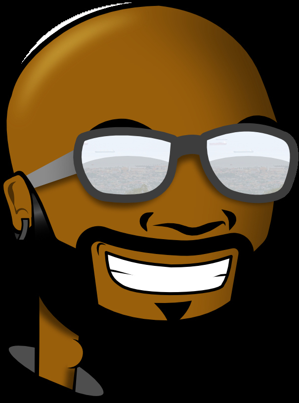

Casimiro Ondo Obiang
Diseño Multimedia e Interactivo
Puerto de Sagunto, España
Sobre mí
Soy una persona sordociega que gusta ver los detalles y con mucha imaginación para ser un diseñador multimedia, interactivo, 3D e impresora 3D que soluciona los problemas de accesibilidad para las personas con diversidad funcional.
- Creativo
- Resultados, cifras y reconocimientos
- Diseño y accesibilidad
- Solución de problemas específicos y urgentes
- Capacidad de decisión y amplia experiencia en el sector
Experiencia
-
2022
Diseñador web, diseñador gráfico y 3D
ZMATRADING · Teletrabajo
-
2021
Administrador de BLOGE
BLOGE (Bloquería) · Bata
-
2021
Corrector de estilo, desarrollador app y web
Eg Sport · Malabo
-
2019
Experto en Accesibilidad y Diseño para todos
Casa Batlló · Barcelona
-
2018-2019
Diseñador gráfico
«Casal Jove», Ayuntamiento de Sagunto
-
2017
Profesor de Curso de Fotografía
«Manos K Ríen» · San Sebastián
-
2015
Profesor de Lengua de Signos
Centro Cultura de España en Malabo · Guinea Ecuatorial
-
2015
Profesor de Lectura y escritura
Centro Cultura de España en Malabo · Guinea Ecuatorial
-
2015
Diseñador gráfico y ayudante del director de Arte
Guinea Digital, Ekos · Malabo, Guinea Ecuatorial
-
2014-2015
Creación de estudio de diseño gráfico y multimedia
«Creative Graphic» · Malabo, Guinea Ecuatorial
-
2013
Maquetación de folleto
Comisión Española de Juventud Sorda (Confederación Nacional de Sordos de España)
-
2013
Diseño de logotipo
Empresa de limpieza «Tarín Cerezuela» · Puerto de Sagunto
-
2013
Maquetación de folleto «Esquema de estrategia de comunicación con personas sordas»
Departamento de Educación del Gobierno Vasco
-
2013
Prácticas de diseñador y maquetación
Horregatik, Donostia-San Sebastián · AransGi (Asociación de Familias de Personas Sordas de Gipuzkoa)
-
2012-2013
Profesor del curso de Photoshop
Manos K Ríen (Asociación Cultural Manos que Ríen)
-
2012
Profesor de informática
Asociación de Personas Sordas de Gipuzkoa
-
2012
Maquetación en AransGi
Asociación de Familias de Personas Sordas de Gipuzkoa
Formación
Formación académica
- 2017-2019 — Técnico Superior en Animación 3D, juegos y entornos interactivos
- 2011-2013 — Técnico Superior en Diseño y Producción Editorial
Formación complementaria
- 2022 — Curso básico de Trading en Criptomonedas (ZMATRADING)
- 2018 — Curso de Cinema 4D (software 3D)
- 2018 — Curso de "Las cosas en internet" con Raspberry Pi
- 2017 — Curso de materiales digitales accesibles y móviles accesibles para todos
Habilidades
- Adobe Photoshop
- Affinity Photo
- Adobe Illustrator
- Affinity Designer
- Affinity Publisher
- Adobe Premiere Pro
- DaVinci Resolve
- Blender 3D
- Cinema 4D
- 3ds Max
- Unity 3D
- HTML5
- C# (Unity 3D)
- TinkerCAD
Idiomas
- Lengua castellana
- Lengua de signos española
- Lengua de signos de Guinea Ecuatorial
Premios
- Ganador del diseño del logotipo de la Comisión de Juventud de Euskal Gorrak (Federación de Asociaciones de Personas Sordas del País Vasco) — 2014
- Ganador del diseño del pañuelo de la Semana Grande de San Sebastián — 2013
- Ganador del diseño del logotipo de la Comisión de Juventud de Fasocide (Federación de las Asociaciones de Personas Sordociegas de España) — 2016
- 4º premio por el diseño del cartel de «Travesía» del Centro de Formación Profesional Don Bosco de San Sebastián — 2013
Director de cortometraje
- Negocio en la crisis
- Ya verás
- Inspector
- Sin luz
- SSC (cortometraje de animación)
Otros datos de interés
Soy una persona activa, con inquietudes y comprometida con el movimiento asociativo de personas sordas y sordociegas, donde he desarrollado las siguientes actividades como voluntario:
- Cargos en diferentes Juntas Directivas de varias asociaciones, como la Asociación de Personas Sordas de Gipuzkoa, Manos K Ríen, Mintzagor, Asocide y otras.
- Charlas y ponencias sobre tecnología y personas sordociegas en la UPV-EHU (Universidad del País Vasco) y varias asociaciones.
- Monitor de tiempo libre en campamentos y salidas de niños sordos con AransGi y Fevapas. También hace representaciones teatrales y cortometrajes con MKR.
- Atletismo, donde ha conseguido varios premios y récords de personas sordas y ciegas a nivel de España. Ex atleta de la selección española.
Contacto
- Correo malabo1990@gmail.com
- Teléfono +34 611 157 517 (WhatsApp, Telegram)
- Ubicación Puerto de Sagunto, España